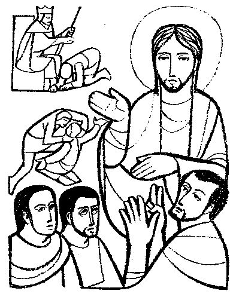
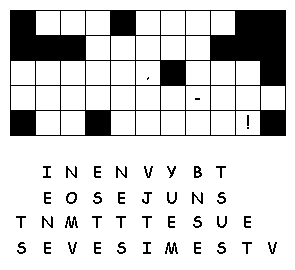

www.logrus.ca Year
A
Proper 19
This week's lessons: Exodus 14:19-31 and Psalm 114 or Exodus 15:1b-11, 20-21 • Genesis 50:15-21 and Psalm 103:(1-7), 8-13 • Romans 14:1-12 • Matthew 18:21-35
Inter-generational Lectionary Study
Opening
Opening prayer by leader, or invite another participant to pray, or use:
Almighty God, who has caused all Holy Scripture to be written for our learning, open our ears and hearts today to learn from your word and from one another, we ask in Jesus' Name. Amen
Set the calendar-clock to the right date. Pentecost is the season of the church's growth, beginning with Pentecost Day which is the birthday of the church, and continuing to the end of the church year.Its colour is green.
Today, the Gospel reviews for us the radical forgiveness that Christ demands of his followers.
Review of Last Week
What was the sermon on? -
What was the Gospel lesson? -
Did anyone have any insights about...
1. How much of the conflict in Emmanuel is kept hidden and 'not talked about' ?
2.How does hidden conflict and old personal resentments distort our decisions or direction as a community of faith?
3.In what ways have you confronted such injuries so that healing and greater health were experienced by all involved?
4.Remembering how Jesus treated Gentiles and tax collectors, what does the line "let such a one be to you as a Gentile or a tax collector" mean to you?
Moreover if thy brother shall trespass against thee, go and tell him his fault between thee and him alone: if he shall hear thee, thou hast gained thy brother.
But if he will not hear thee, then take with thee one or two more, that in the mouth of two or three witnesses every word may be established.
And if he shall neglect to hear them, tell it unto the church: but if he neglect to hear the church, let him be unto thee as an heathen man and a publican.
Verily I say unto you, Whatsoever ye shall bind on earth shall be bound in heaven: and whatsoever ye shall loose on earth shall be loosed in heaven.
Again I say unto you, That if two of you shall agree on earth as touching any thing that they shall ask, it shall be done for them of my Father which is in heaven.
For where two or three are gathered together in my name, there am I in the midst of them.
Who is speaking in this passage? How do the Israelites feel?
How does this passage relate to last week's passage?
Those who do wrong can ask for forgiveness and be reunited to the church. The servant asked for and received forgiveness of his debt. We pray “forgive us our sins as we forgive others.” The servant did not forgive others, and so his master did not forgive him after all.
How does this passage relate to the Exodus 15 passage?
The master threatened to sell the servant and the servant's family to recover his debt – they would have become slaves. The Exodus 15 passage celebrates the Israelites' salvation from slavery. Freedom came to them from God; freedom is lost to the servant by the servant's own actions.
“Pew-work” is like Home-work, except that it is done in the pews, instead of being done at home. Because it is focussed on the readings (as the sermon, presumably, also is) it can be done during the sermon to help the listener concentrate. Or, it can be done while waiting for everyone else to finish their communion. It isn't done during prayers, or hymns, or the readings, because
During Prayers, we pray
During Hymns, we sing
During the Readings, we listen
Preschool Pew-work
Cerezo Barredo's Lectionary illustrations -- http://www.servicioskoinonia.org/cerezo/dibujosA/47OrdinarioA24.jpg
Primary School Pew-work

Elementary School Pew-work
C
A M E H I M S S L
|
(Matthew 18:21-22 NRSV) Then Peter came and said to him, "Lord, if another member of the church sins against me, how often should I forgive? As many as seven times?" Jesus said to him, "Not seven times, but, I tell you, seventy-seven times. |
Word List |
frhttp://www.efree.mb.ca/lectionarypuzzlesom free to distribute for free with this notice. Words are in a straight line left to right or top to bottom |
||
What is Peter
asking Jesus?
________________________________________
_______________________________________________________________
What does
Jesus
answer?___________________________________________
_______________________________________________________________
Why do we
think Jesus picked this
number?___________________________
_______________________________________________________________
What would the
two debts be in today's economy?
______________________
_______________________________________________________________
Questions taken from the Episcopal Church's Lesson Plans for Small Congregations: http://www.episcopalchurch.org/50534_ENG_HTM.htm
|
 |
Try to fill in the missing numbers. Use the numbers 1 through 9 to complete the equations. Each number is only used once. Each row is a math equation. Each column is a math equation.Remember that multiplication and division are performed before addition and subtraction. Created by Puzzlemaker at DiscoveryEducation.com |
Middle-School Pew-work
70 x 7 = _______________?
Should you forgive your brother 491 times? Why or why not? _________________________________ __________________________________________________________________________________________________________________________________________________________________________________________________________________________________________________________________________________________________________________________________________________________________________________________________________________________________________________________________________________________________________________
Is Jesus saying you should forgive and forget? When might it be good, and when might it be bad, to forget about a hurt done to you? ________________________________________________________ _____________________________________________________________________________________________________________________________________________________________________________________________________________________________________________________________________________________________________________________________________________________________________________________________________________________________________________________________________________________________________________________________________________________________________________________________________
Sermon Summary
|
What Scripture is the Sermon is based on? |
__________________________________ |
|
What is the main point of the Sermon? |
__________________________________ |
|
Write down any figures of speech used by the preacher (Metaphors, Similes, hyperbole) |
__________________________________ |
|
Write down any new, unusual or particularly interesting words the preacher uses |
_______________
|
Adult Pew-work
Focus Statement: “How often should I forgive?”
|
_________________________________________ |
|
_________________________________________ |
|
_________________________________________ |
|
_________________________________________ |
|
_________________________________________ |
Next
week: Exodus
14:19-31
and Psalm
114 or
Exodus
15:1b-11, 20-21 •
Genesis
50:15-21
and Psalm
103:(1-7), 8-13 •
Romans
14:1-12 •
Matthew
18:21-35